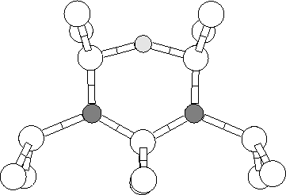

Calculations on the N pair defect [145] showed that Ni dilated the Si(1)-Si(5) bond (Fig. 7.4) by 4%, making it a prime site for Oi. The other Si bonds bordering the pair along [100] are compressed making these unlikely sites for the Oi. Previous investigations on the trapping of Oi at dislocation cores showed a marked preference for O to bridge dilated Si bonds [156].
|  |
We investigated several possible configurations for the NNO defect, using a 134 atom cluster, Si71H60N2O, and found that the structure shown in Figure 7.4 was the only one that fitted the experimental data. Moving the O atom in this model to bridge the second nearest Si-Si bond along [011] between Si(5) and Si(6) was 1.2eV less stable. Neither moving the Oi to lie between N(1) and Si(3) in Figure 7.4 or using O to bridge the dilated bond in the Humble N-pair model [145] (Figure 7.3) gave modes in the right region or produced the correct isotope shifts. Our conclusion is that the structure in Figure 7.4 represents the NNO defect.
The vibrational modes of the structure are given in Table 7.1. The two modes at 1070 and 808 cm-1 are clearly N-related, as they barely shift with the O-isotope, whereas the 861 cm-1 mode is O-related. The mixed isotopic results show very little coupling between the N-related modes. This explains why no new modes are introduced in this case, since the nearby Oi makes the two N atoms inequivalent.
Thus although the modes are in the correct region and display the correct isotopic behaviour, their ordering is incorrect: the O mode should lie above the two highest N modes. This ordering and their positions are, however, very sensitive to the position of the common Si atom, Si(1) (Figure 7.4). If this is displaced by 0.07 Å along [011], decreasing the Si(1)-O and increasing the N(1)-Si(1) lengths by 0.05 and 0.07 Å respectively, then the O and N modes are within 70 cm-1 of the observed frequencies (Table 7.1). Once again the N atoms are decoupled. The changes in bond lengths caused by the shift of Si(1) and the discrepancies between the calculated and observed modes lie within the errors of the calculation.
The highest O-mode is simply an asymmetric stretch in the Si-O bonds, with a symmetric stretch mode at lower frequency. It shifts downwards by 23 cm-1 when 16O is substituted by 17O, which is somewhat larger than the observed shift of 17 cm-1. The calculation found no O-shift of the 949 cm-1 mode whereas a downwards shift of 8 cm-1 is observed (Table 7.1). Note however, that with the displaced Si(1)-atom the calculated O-mode and highest N-mode cross when 16O is substituted by 17O. Such a crossing is not observed experimentally. The extreme sensitivity of the position of the common Si-atom (Si(1)) and the possibility of crossing of the two highest modes makes it rather difficult to calculate the isotopic shifts for these modes. In the calculations almost no interaction between the two highest modes were found. However, just a small interaction would automatically cause a smaller O-shift of the 963 cm-1 mode and a (larger) O-shift of the 949 cm-1 mode. Contrary to this, the mode at 813 cm-1 shows no shift with 17O in close agreement with the observed shift of 1 cm-1.
Consider now the shifts with N isotopes. Substituting 14N by 15N, the calculated shifts of the 963, 949 and 813 cm-1 modes are 0, 29 and 21 respectively in good agreement with the observed shifts of 2, 25 and 19 cm-1. Finally, a mode involving motion of both N-atoms were found at 727 cm-1 in the calculation. The 727 cm-1 shifts 19 cm-1 with 15N but does not show any shift with O. The position and shift of the 727 cm-1 calculated mode is extremely close to the observed mode at 739 cm-1 that displays a 18 cm-1 shift with 15N and no resolvable shift with O. Furthermore, the 727 cm-1 mode is expected to split into four components when both N-isotopes are present (Table 7.1). Considering the small intensity of the observed mode at 739 cm-1, this explains why this mode is not observed in samples implanted with both 14N and 15N.
| 14N 16O | 15N 16O | 14N 15N 16O | 15N 14N 16O | 14N 17O | 14N 18O | |
| 4lCalculated | ||||||
| N(1) | 1070.4 | 30.8 | 0.6 | 30.1 | 0.1 | 0.1 |
| O | 861.1 | 1.0 | 0.4 | 0.7 | 20.6 | 37.2 |
| N(2) | 808.2 | 20.1 | 20.0 | 0.1 | 1.3 | 3.7 |
| 723.9 | 18.4 | 15.6 | 1.7 | 0.4 | 0.0 | |
| 671.5 | 15.7 | 2.0 | 14.8 | 2.2 | 0.9 | |
| 4lDisplaced Si(1) atom | ||||||
| O | 962.9 | 0.2 | 0.1 | 0.1 | 23.4 | 44.0 |
| N(1) | 948.9 | 28.8 | 0.9 | 27.6 | -0.5 | -0.3 |
| N(2) | 813.3 | 20.7 | 20.6 | 0.3 | 0.0 | 0.1 |
| 727.0 | 18.8 | 13.0 | 3.1 | 0.0 | 0.0 | |
| 688.1 | 15.8 | 4.6 | 13.9 | 0.4 | 0.7 | |
| 4lObserved | ||||||
| O | 1030 | 3 | 2c 2 | 17 | ||
| N(1) | 999 | 25 | 2c 0, 25 | 8 | ||
| N(2) | 805 | 19 | 2c 0, 19 | 1 | ||
| 739 | 28 |